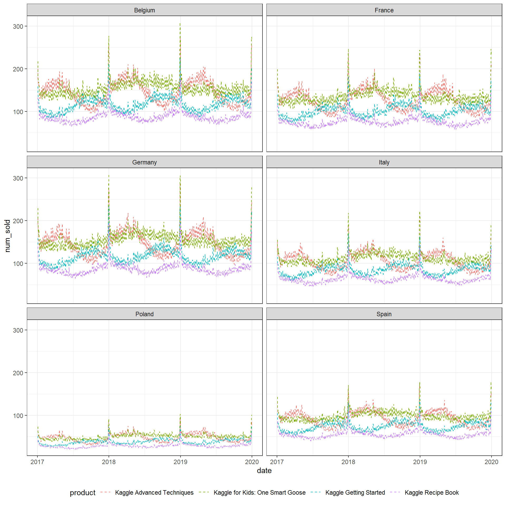
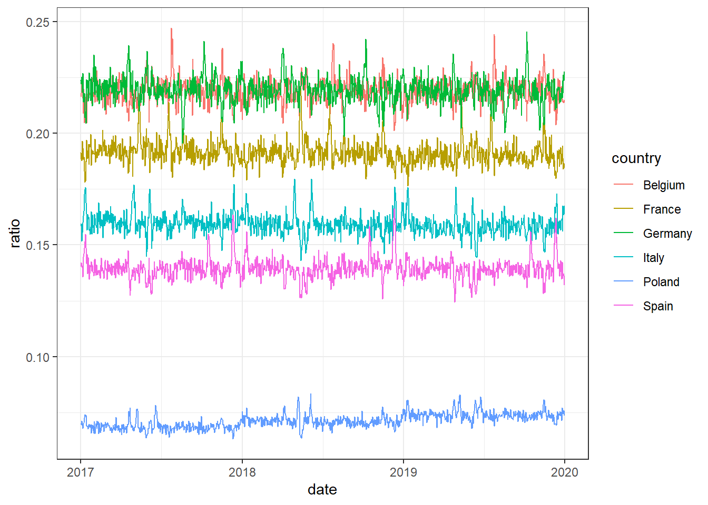

train_data[
,
`:=`(year = as.factor(year(date)), month = as.factor(month(date)), day_of_year = yday(date), day_of_month = day(date), weekday = as.factor(weekdays(date)))
]EDA
This document is an EDA of the data. This document creates no output; changes to data will be made in separate scripts.
Let’s initially create some time variables to be able to analyse seasonality within year, month and week.
Questions
What is the range of values and does it match expectations?
Are there missing or odd values that we need to impute (or delete faulty records / variables)?
Which values are the most common and why?
Which values are rare (outliers) and why? Are there perhaps faulty records?
Are there any unusual patterns that don’t match expectations
summary(train_data) row_id date country store
Min. : 0 Min. :2017-01-01 Belgium:8760 KaggleMart:26280
1st Qu.:13140 1st Qu.:2017-10-01 France :8760 KaggleRama:26280
Median :26280 Median :2018-07-02 Germany:8760
Mean :26280 Mean :2018-07-02 Italy :8760
3rd Qu.:39419 3rd Qu.:2019-04-02 Poland :8760
Max. :52559 Max. :2019-12-31 Spain :8760
product num_sold year
Kaggle Advanced Techniques :13140 Min. : 19.0 2017:17520
Kaggle for Kids: One Smart Goose:13140 1st Qu.: 89.0 2018:17520
Kaggle Getting Started :13140 Median :142.0 2019:17520
Kaggle Recipe Book :13140 Mean :185.9
3rd Qu.:269.0
Max. :986.0
month day_of_year day_of_month weekday
1 : 4464 Min. : 1 Min. : 1.00 Friday :7488
3 : 4464 1st Qu.: 92 1st Qu.: 8.00 Monday :7536
5 : 4464 Median :183 Median :16.00 Saturday :7488
7 : 4464 Mean :183 Mean :15.72 Sunday :7536
8 : 4464 3rd Qu.:274 3rd Qu.:23.00 Thursday :7488
10 : 4464 Max. :365 Max. :31.00 Tuesday :7536
(Other):25776 Wednesday:7488 No missing values. Only categorical predictors and no numeric. Label takes reasonable values, although heavy tailed. Number of observations of each category is uniform, suggesting one record pr. day pr. sub group without any missing days or duplicates - let’s quickly confirm this.
# correct number of days
nrow(train_data[ , .N, by = date]) == (nrow(train_data) / (6 * 2 * 4))[1] TRUE# consistent number of obs pr day
train_data[ , .N, by = date]$N %>% unique[1] 48Note that we have 6 * 2 * 4 univariate time series.
Visualizing Time Series
We will start out by visualizing each of time series:
KaggleMart
train_data[store == "KaggleMart"] %>%
ggplot(aes(x = date, y = num_sold, color= product)) +
#geom_line() +
geom_ma(ma_fun = SMA, n = 3) +
facet_wrap(~ country, ncol = 2) +
#facet_grid(rows = vars(country)) +
theme(legend.position = "bottom")KaggleRama
train_data[store == "KaggleRama"] %>%
ggplot(aes(x = date, y = num_sold, color= product)) +
#geom_line() +
geom_ma(ma_fun = SMA, n = 3) +
facet_wrap(~ country, ncol = 2) +
#facet_grid(rows = vars(country)) +
theme(legend.position = "bottom")
Each product exhibits strong seasonality, although it is a different pattern from product to product. The seasonality pattern seems to be consistent from country to country as well as from store to store, so there is evidently no interaction. The effect of country and store seems to mostly be a matter of volume sold (ie. a translation along the y-axis), and not so much a change in seasonality (perhaps it is kind of odd that the type of seasonality observed does not differ from country to country). There are significant spikes around the holidays.
Country
Investigating differences in aggregate sales across countries
train_data %>%
group_by(
date,
country
) %>%
summarize(
num_sold= sum(num_sold)
) %>%
ggplot(aes(x = date, y = num_sold, color = country)) +
geom_ma(ma_fun = SMA, n = 3)`summarise()` has grouped output by 'date'. You can override using the
`.groups` argument.
As suspected, the only difference seems to be a translation in the volume sold. Let’s visually confirm this by looking at the ratios over time: if they are consistent over time, the effect of country is constant and independent of time.
train_data %>%
group_by(
date, country
) %>%
summarise(
num_sold = sum(num_sold)
) %>%
group_by(
date
) %>%
mutate(
num_sold_d = sum(num_sold),
ratio = num_sold / num_sold_d
) %>%
ggplot(aes(x = date, y = ratio, color = country)) +
geom_line()`summarise()` has grouped output by 'date'. You can override using the
`.groups` argument.
Store
train_data %>%
group_by(date, store) %>%
summarise(
num_sold= sum(num_sold)
) %>%
ggplot(aes(x = date, y = num_sold, color = store)) +
geom_ma(ma_fun = SMA, n = 3)`summarise()` has grouped output by 'date'. You can override using the
`.groups` argument.
train_data %>%
group_by(
date, store
) %>%
summarise(
num_sold = sum(num_sold)
) %>%
group_by(
date
) %>%
mutate(
num_sold_d = sum(num_sold),
ratio = num_sold / num_sold_d
) %>%
ggplot(aes(x = date, y = ratio, color = store)) +
geom_line()`summarise()` has grouped output by 'date'. You can override using the
`.groups` argument.Same for store.
Product
train_data %>%
group_by(date, product) %>%
summarise(
num_sold= sum(num_sold)
) %>%
ggplot(aes(x = date, y = num_sold, color = product)) +
geom_ma(ma_fun = SMA, n = 3) +
theme(legend.position = "bottom")`summarise()` has grouped output by 'date'. You can override using the
`.groups` argument.Except for Kaggle for Kids, each product has a strong yearly seasonality.
train_data %>%
group_by(
date, product
) %>%
summarise(
num_sold = sum(num_sold)
) %>%
group_by(
date
) %>%
mutate(
num_sold_d = sum(num_sold),
ratio = num_sold / num_sold_d
) %>%
ggplot(aes(x = date, y = ratio, color = product)) +
geom_line() +
theme(legend.position = "bottom")`summarise()` has grouped output by 'date'. You can override using the
`.groups` argument.The ratio of sales by product exhibits even stronger seasons.
Seasonality
Note that seasonality are consistent patterns over a specific interval (year, month, week). Cyclical behavior are regular patterns that do not occur according to specific intervals.
By year
See previous section.
By month
Note that inverse trends in the sub groups may cancel each other out, meaning that we would not be able to spot any patterns when looking at aggregate data, even though there are patterns when we look at individual ts.
train_data %>%
group_by(day_of_month, month, product) %>%
summarise(
num_sold = sum(num_sold)
) %>%
ggplot() +
geom_point(aes(x = day_of_month, y = num_sold, color = product)) +
facet_wrap(~ month) +
theme(legend.position = "bottom")`summarise()` has grouped output by 'day_of_month', 'month'. You can override
using the `.groups` argument.There does not seem to be monthly seasonality, eg. sales do not seem to increase just after payday.
By week
train_data %>%
group_by(
weekday, product
) %>%
summarize(
num_sold = sum(num_sold)
) %>%
ggplot() +
geom_point(aes(x = weekday, y = num_sold, color = product)) +
theme(legend.position = "bottom")`summarise()` has grouped output by 'weekday'. You can override using the
`.groups` argument.
There is strong weekly seasonality, especially between weekends and workdays.
Trends
In order assess whether any trends are present, we will de-seasonalize the time series aggregated by product. (below does not work since the seasonal component is apparently not strong enough …)
# decomp <-
# train_data %>%
# group_by(
# date,
# product
# ) %>%
# summarise(
# num_sold = sum(num_sold)
# ) %>%
# pivot_wider(
# values_from = num_sold,
# names_from = "product"
# ) %>%
# ungroup() %>%
# select(-date) %>%
# map(
# ~ seasadj(stl(.x))
# )COVID
Even though the test data should usually be excluded from EDA, we need to check the effect of COVID lockdowns in each of the countries for two reasons
We need to remove the effect of lockdowns in order for 2020 to be useful test data.
We need to include a variable accounting for lockdowns when predicting on the full data.
data %>%
group_by(
date
) %>%
summarize(
num_sold= sum(num_sold)
) %>%
ggplot(aes(x = date, y = num_sold)) +
geom_ma(ma_fun = SMA, n = 3)The total volume sold during 2020 is much larger. There is a significant drop during spring, probably because of lockdowns.
data %>%
group_by(
date,
country
) %>%
summarize(
num_sold= sum(num_sold)
) %>%
ggplot(aes(x = date, y = num_sold, color = country)) +
geom_ma(ma_fun = SMA, n = 3)`summarise()` has grouped output by 'date'. You can override using the
`.groups` argument.The difference between countries is completely erased. The sales has increased dramatically for some counties (Poland), while staying unchanged for others. The effect of lockdown seems to be consistent across countries.
data %>%
group_by(
date,
store
) %>%
summarize(
num_sold= sum(num_sold)
) %>%
ggplot(aes(x = date, y = num_sold, color = store)) +
geom_ma(ma_fun = SMA, n = 3)`summarise()` has grouped output by 'date'. You can override using the
`.groups` argument.The effect of store is still constant.
data %>%
group_by(
date,
product
) %>%
summarize(
num_sold= sum(num_sold)
) %>%
ggplot(aes(x = date, y = num_sold, color = product)) +
geom_ma(ma_fun = SMA, n = 3) +
theme(legend.position = "bottom")`summarise()` has grouped output by 'date'. You can override using the
`.groups` argument.The sales volume never really comes back down from the holiday spike. However, there is a decrease when lock downs set in during spring, compared to what would have been the case if the seasonal patterns were as usual.
data[year(date) == 2020] %>%
group_by(
date,
product
) %>%
summarize(
num_sold= sum(num_sold)
) %>%
ggplot(aes(x = date, y = num_sold, color = product)) +
geom_line() +
theme(legend.position = "bottom")`summarise()` has grouped output by 'date'. You can override using the
`.groups` argument.Lockdown data
lockdown_data[year(date) == 2020] %>%
ggplot(aes(x = date, y = policy)) +
geom_point() +
facet_wrap(~ country)The policies in place differ greatly from country to country, which does not really reflect the pattern we see in data (all countries show the same pattern).
TL;DR: Conclusions
Summary of key findings to be implemented and taken into account in the further modeling:
Handling 2020: 2020 is way too different from the other years to be able to use it as test data. Instead, we will build a model using 2017 and 2018 and test it on 2019. We will then build on that model by adjusting it based on 2020, assuming the difference is COVID driven (and thus also present in 2021 - if 2020 is just an anomaly, we can test it by applying the first model to the competition test data and see if the public leader board is way of). We will build the model this way, but we might try to only train it on 2020.
Lockdown periods do not really correlate with the patterns in data. It does seem that the “old” patterns resume after the initial period of (march till june), so we might assume that 2021 just follows the old patterns but a generally larger volume (2020 levels).One option is to create a multivariate time series model (ARIMA, Prophet, etc.). Another options is to use a regular ML model using day of year as a predictor (we only yearly patters into account and not any autocorrelation or lagged values). Maybe we can combine both?
A useful approach might be to forecast the ratios of each TS and the total volume sold, since the ratios exhibit consistent patterns.
Yearly seasonality is product driven. Each product evidently has its own type of season.
Are there monthly seasons? We might expect sales to be larger in the beginning of the month, just after payday.
There are weekly seasons, especially between weekend/work. Weekday or a weekend indicator is a useful variable.
There is a strong effect of holidays around Christmas / beginning of jan.
There does not seem to be trends over time which we would need to extrapolate trends to future years.
COVID: Effects of lockdowns in each country in 2020 and 2021 needs to be accounted for. Note that in order for 2020 to be a reliable source of test data, we nee do create a version where the effect of lockdown is removed.